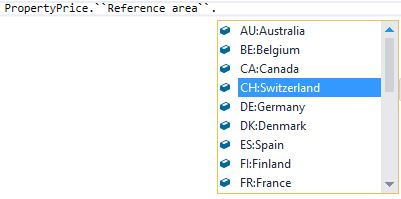
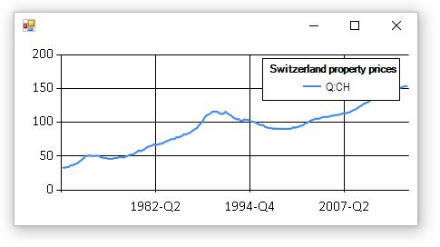
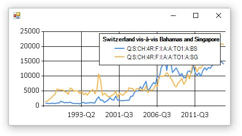

The Bank for International Settlements (BIS) publishes statistics relevant for anaylsis. Most of the data is compiled in cooperation with central banks and other national authorities. More information can be found on the BIS statistics website. The data exploration can be done either through the BIS Statistics Explorer, BIS Statistics Warehouse or by downloading the raw CSV formatted files. The last option is very interesting from an automation perspective, as it allows you to use an analysis tool of your choice. The following statistics can be downloaded from here:
The BIS Type Provider extracts metadata out of the CSV file and generates an abstraction layer which simplifies filtering on the file. The main advantages are:
The following examples show how to run the BIS Type Provider. First we download the Property prices: long series CSV file as the structure of this data is very simple and perfect for this demo. Firstly (see code block below), the “PropertyPrice” type must be defined. By doing this, the BIS Type Provider analysis the CSV file and generates the PropertyPrice.ObservationFilter plus one type per dimension of the property price data. In this case the types “Frequency” and “Reference Area” are generated and each of them contains generated fields per dimension member. As shown in the picture below, the metadata is reflected in the code. With this, we have full IntelliSense support and compile-time checks!

It requires only 3-4 lines of code to filter out a certain observation out of the data. The last part of the code builds up a line chart for the data we are looking for. I’m using the FSharp.Charting for the visualization.
type PropertyPrice = Dataset<"C:/full_BIS_LONG_PP_csv.csv">
....
// Create filter
let filter = new PropertyPrice.ObservationFilter()
// Define criteria
filter.``Reference area`` <- [ PropertyPrice.``Reference area``.``CH:Switzerland`` ]
// Apply filter and plot
filter.Get()
|> Seq.map (fun o ->
o.values
|> Seq.filter (fun v -> v.value.IsSome)
|> Seq.map (fun v -> v.value.Value)
|> (fun x -> Chart.Line(x, Name = o.key)))
|> Chart.Combine
|> Chart.WithLegend(true, Title="Switzerland property prices")
|> Chart.Show
And this is the output of this code.

Let’s take one step further and analyse data of a much more complex dataset. The CBS file contains more records and dimensions than the Property prices dataset. The following piece of code filters out certain observations on Switzerland vis-à-vis Bahamas and Singapore and plots the outcome in a chart. Same as for the previous example, the CSV file is analysed by the BIS Type Provider and relevant types are generated.
type Cbs = Dataset<"C:/full_BIS_CBS_csv.csv">
....
let filter = new Cbs.ObservationFilter()
filter.Measure <- [ Cbs.Measure.``S:Amounts outstanding / Stocks`` ]
filter.``Reporting country`` <- [ Cbs.``Reporting country``.``CH:Switzerland`` ]
filter.``CBS bank type`` <- [ Cbs.``CBS bank type``.``4R:Domestic banks(4B), excl. domestic positions`` ]
filter.``CBS reporting basis`` <- [ Cbs.``CBS reporting basis``.``F:Immediate counterparty basis`` ]
filter.``Balance sheet position`` <- [ Cbs.``Balance sheet position``.``I:International claims`` ]
filter.``Type of instruments`` <- [ Cbs.``Type of instruments``.``A:All instruments`` ]
filter.``Remaining maturity`` <- [ Cbs.``Remaining maturity``.``A:All maturities`` ]
filter.``Currency type of booking location`` <- [ Cbs.``Currency type of booking location``.``TO1:All currencies``]
filter.``Counterparty sector`` <- [ Cbs.``Counterparty sector``.``A:All sectors`` ]
filter.``Counterparty country`` <- [ Cbs.``Counterparty country``.``BS:Bahamas``; Cbs.``Counterparty country``.``SG:Singapore`` ]
filter.Get()
|> Seq.map (fun o ->
o.values
|> Seq.filter (fun v -> v.value.IsSome)
|> Seq.map (fun v -> v.value.Value)
|> (fun x -> Chart.Line(x, Name = o.key)))
|> Chart.Combine
|> Chart.WithLegend(true, Title="Switzerland vis-à-vis Bahamas and Singapore")
|> Chart.Show

The cbs.Filter() function returns a sequence of observations and their values for all periods. With F# you can easily slice out and aggregate data. In this code snippet we use the same filter as above and sum the values of 2000-Q1 of Bahamas and Singapore.
let sum = filter.Get()
|> Seq.map (fun o ->
o.values
|> Seq.find (fun v -> v.year = 2000 && v.period = 1 && v.value.IsSome))
|> Seq.map (fun v -> v.value.Value)
|> Seq.sum